Creating photorealistic materials for 3D rendering requires exceptional artistic skill. Generative models for materials could help, but are currently limited by the lack of high-quality training data. While recent video generative models effortlessly produce realistic material appearances, this knowledge remains entangled with geometry and lighting.
We present VideoNeuMat, a two-stage pipeline that extracts reusable neural material assets from video diffusion models. First, we finetune a large video model to generate material sample videos under controlled camera and lighting trajectories, effectively creating a virtual gonioreflectometer that preserves the model's material realism while learning a structured measurement pattern.
Second, we reconstruct compact neural materials from these videos through a Large Reconstruction Model. From generated video frames, our model predicts neural material parameters that generalize to novel viewing and lighting conditions.
Supplementary video excerpt, 00:06-02:36.
VideoNeuMat first adapts a video diffusion model into a structured material-video generator, then distills the generated measurements into a compact neural material representation for relighting and rendering on new geometry.
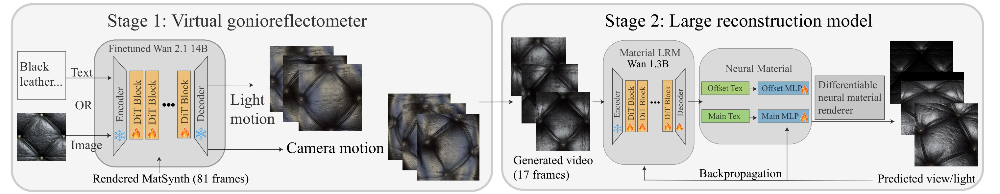
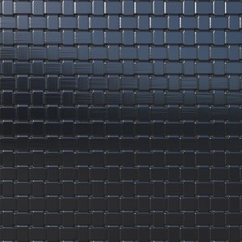
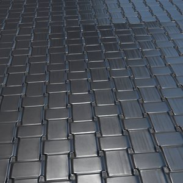
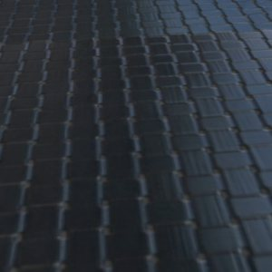
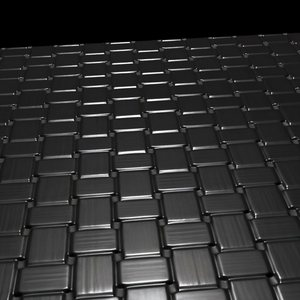
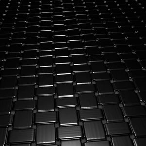
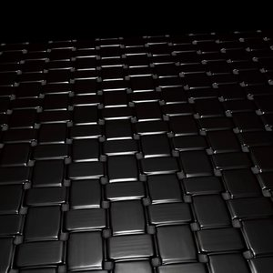
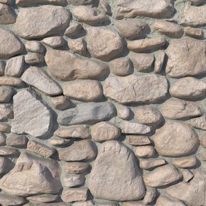
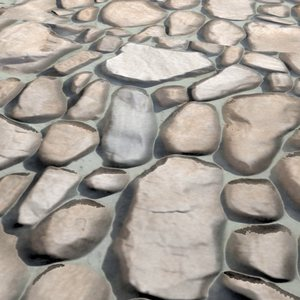
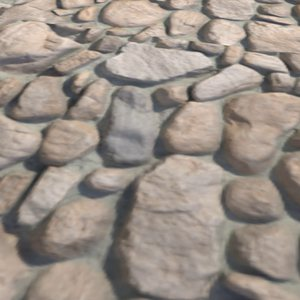
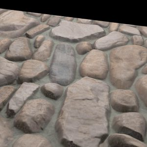
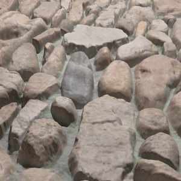
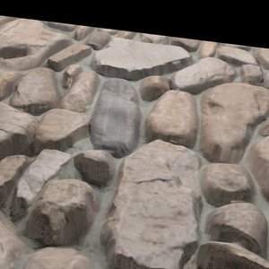
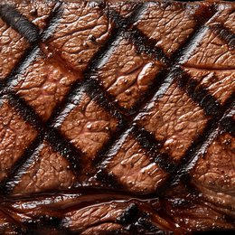
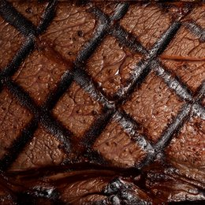
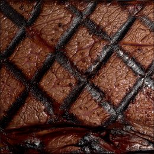
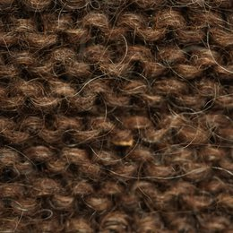
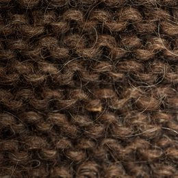
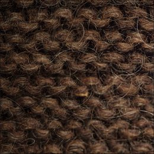
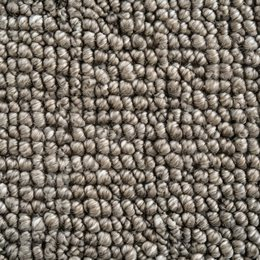
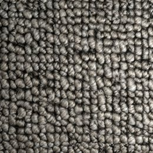
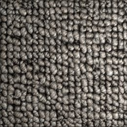
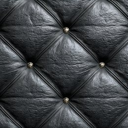
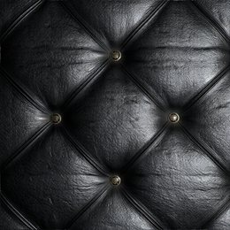
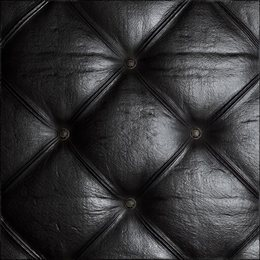
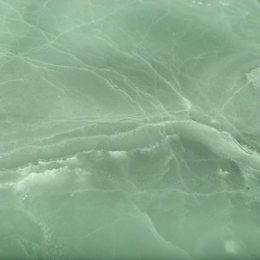
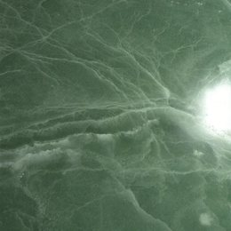
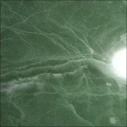
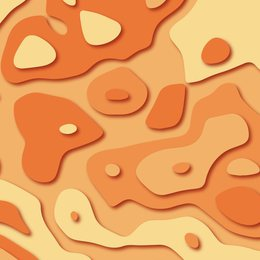
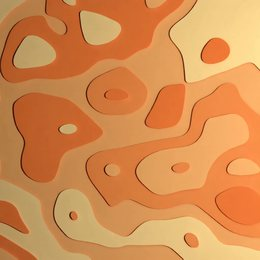
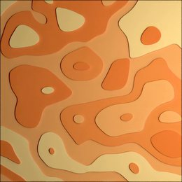
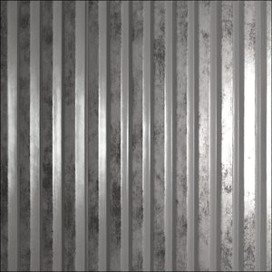
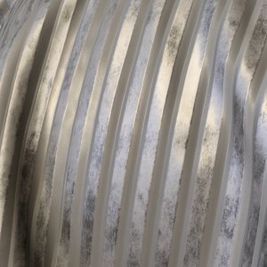
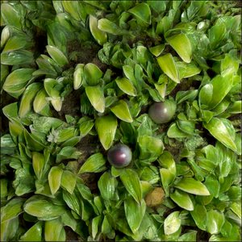
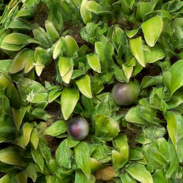
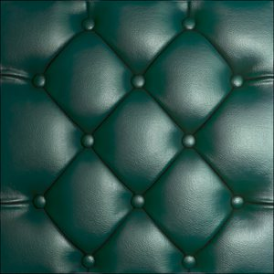
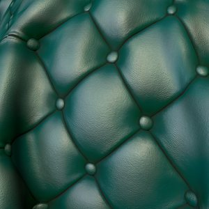
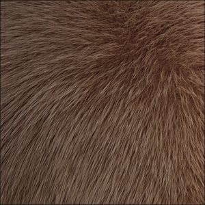
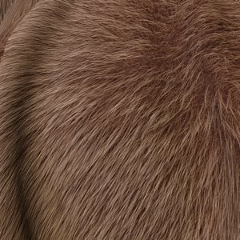
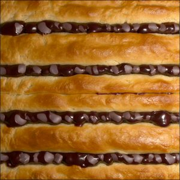
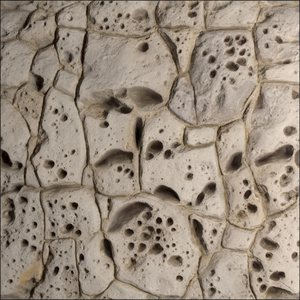
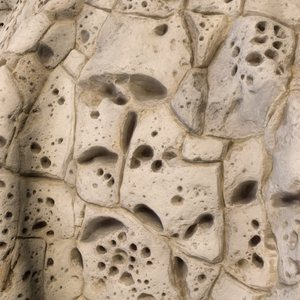
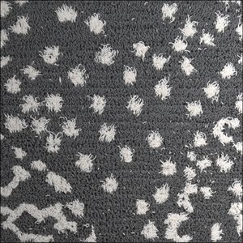
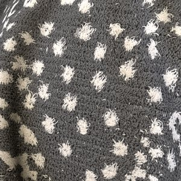
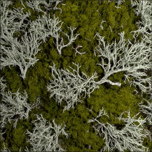
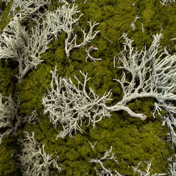
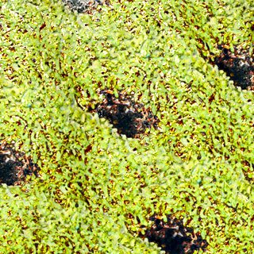
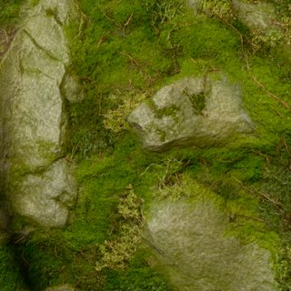
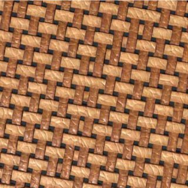
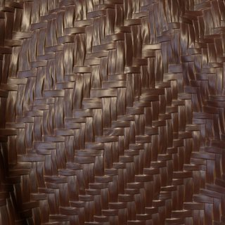
@article{xue2026videoneumat,
author = {Xue, Bowen and Hadadan, Saeed and Zeng, Zheng and Rousselle, Fabrice and Montazeri, Zahra and Hasan, Milos},
title = {VideoNeuMat: Neural Material Extraction from Generative Video Models},
journal = {ACM Transactions on Graphics (SIGGRAPH)},
year = {2026},
}